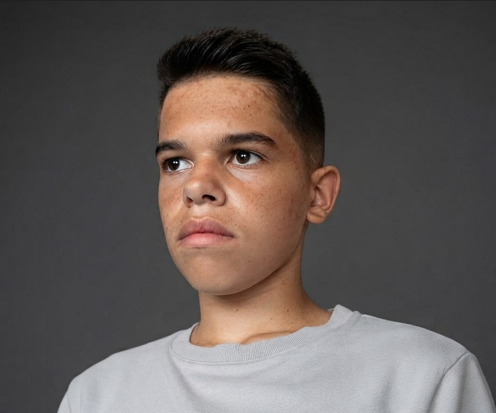

DDEBREMCONSTRUCT
Un site web realizat pentru prezentarea unei companii de construcții și a serviciilor sale.
Tehnologii: HTML, CSS
Rol: Dezvoltare web
Vizitează site-ulElev la profilul Matematică-Informatică / Programator / Pasionat de Linux
Vezi proiectele Descarcă CV-ul
Sunt elev la profilul Matematică-Informatică și sunt interesat de programare, tehnologie și sisteme de operare.
Sunt curios, perseverent și atent la detalii. Îmi place să învăț lucruri noi și să găsesc soluții logice la probleme, dorindu-mi să-mi dezvolt în continuare competențele în domeniul IT.
2024 – Prezent
Profil: Matematică-Informatică
2020 – 2024
Română — Limbă maternă
Engleză — B2
Franceză — A1
Un site web realizat pentru prezentarea unei companii de construcții și a serviciilor sale.
Tehnologii: HTML, CSS
Rol: Dezvoltare web
Vizitează site-ulPremiul I pentru realizarea unui poster digital în cadrul concursului „Astronomia din perspectiva unui începător”.
Anul: 2026
Vezi diplomaParticipare la Simpozionul Carmen Sylva 2026.
Anul: 2026
Vezi diplomaParticipare la Simpozionul Carmen Sylva 2026.
Anul: 2026
Vezi diplomaParticipare la ediția a VIII-a a simpozionului regional/interjudețean, organizat de Liceul Teoretic „Gelu Voievod” din Gilău.
Anul: 2026
Vezi diplomaCertificat de participare în cadrul Programului național „Săptămâna Verde”.
Anul: 2024
Vezi diplomaCertificat de voluntariat pentru participarea la activități caritabile în cadrul proiectului „Dialogul Altruismului și Recunoștinței”.
Anul: 2025
Vezi diplomaCertificat de voluntariat în cadrul programului Strategiei Naționale de Acțiune Comunitară (SNAC D.A.R.), pentru anul școlar 2024–2025.
Anul: 2025
Vezi diplomaParticipare la concursul de creare a logo-ului pentru proiectul „Fantastic Beasts in Our Neighbourhood” (2F for the Planet).
Anul: 2026
Vezi diplomaCertificat pentru participarea activă la proiectul inițiat de Consiliul Școlar al Elevilor.
Anul: 2026
Vezi diploma